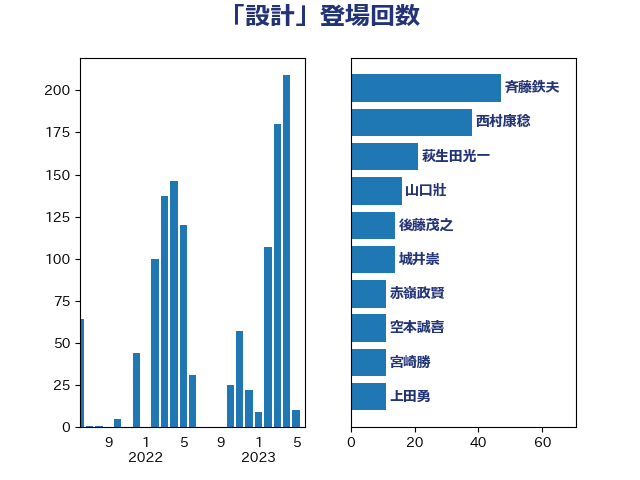

単語「設計」

| 斉藤鉄夫 | 公明党 | 47 回 |
| 西村康稔 | 自由民主党 | 38 回 |
| 萩生田光一 | 自由民主党 | 21 回 |
| 山口壯 | 自由民主党 | 16 回 |
| 後藤茂之 | 自由民主党 | 14 回 |
| 城井崇 | 立憲民主党 | 14 回 |
| 赤嶺政賢 | 日本共産党 | 11 回 |
| 空本誠喜 | 日本維新の会 | 11 回 |
| 宮崎勝 | 公明党 | 11 回 |
| 上田勇 | 公明党 | 11 回 |
| 浅野哲 | 国民民主党 | 10 回 |
| 伊藤渉 | 公明党 | 10 回 |
| 小倉將信 | 自由民主党 | 9 回 |
| 白石洋一 | 立憲民主党 | 8 回 |
| 岸田文雄 | 自由民主党 | 8 回 |
| 伊藤孝恵 | 国民民主党 | 8 回 |
| 西村明宏 | 自由民主党 | 7 回 |
| 笠井亮 | 日本共産党 | 7 回 |
| 渡辺猛之 | 自由民主党 | 7 回 |
| 浜田靖一 | 自由民主党 | 7 回 |
| 山崎誠 | 立憲民主党 | 7 回 |
| 小野泰輔 | 日本維新の会 | 7 回 |
| 奥野総一郎 | 立憲民主党 | 7 回 |
| 鈴木義弘 | 国民民主党 | 6 回 |
| 西銘恒三郎 | 自由民主党 | 6 回 |
| 藤田文武 | 日本維新の会 | 6 回 |
| 牧島かれん | 自由民主党 | 6 回 |
| 永岡桂子 | 自由民主党 | 6 回 |
| 小林鷹之 | 自由民主党 | 6 回 |
| 小宮山泰子 | 立憲民主党 | 6 回 |
| 寺田学 | 立憲民主党 | 6 回 |
| 古川禎久 | 自由民主党 | 6 回 |
| 高木かおり | 日本維新の会 | 5 回 |
| 阿部司 | 日本維新の会 | 5 回 |
| 西野太亮 | 自由民主党 | 5 回 |
| 穂坂泰 | 自由民主党 | 5 回 |
| 片山大介 | 日本維新の会 | 5 回 |
| 河西宏一 | 公明党 | 5 回 |
| 末松信介 | 自由民主党 | 5 回 |
| 日下正喜 | 公明党 | 5 回 |
| 井坂信彦 | 立憲民主党 | 5 回 |
| 高橋千鶴子 | 日本共産党 | 4 回 |
| 野田聖子 | 自由民主党 | 4 回 |
| 足立敏之 | 自由民主党 | 4 回 |
| 足立康史 | 日本維新の会 | 4 回 |
| 秋葉賢也 | 自由民主党 | 4 回 |
| 清水貴之 | 日本維新の会 | 4 回 |
| 木村次郎 | 自由民主党 | 4 回 |
| 志位和夫 | 日本共産党 | 4 回 |
| 川田龍平 | 立憲民主党 | 4 回 |
| 岸真紀子 | 立憲民主党 | 4 回 |
| 山添拓 | 日本共産党 | 4 回 |
| 小泉進次郎 | 自由民主党 | 4 回 |
| 小池晃 | 日本共産党 | 4 回 |
| 宮口治子 | 立憲民主党 | 4 回 |
| 大島敦 | 立憲民主党 | 4 回 |
| 古川直季 | 自由民主党 | 4 回 |
| 加藤勝信 | 自由民主党 | 4 回 |
| 伊波洋一 | 無所属 | 4 回 |
| 中川正春 | 立憲民主党 | 4 回 |
| 齋藤健 | 自由民主党 | 3 回 |
| 高木真理 | 立憲民主党 | 3 回 |
| 高市早苗 | 自由民主党 | 3 回 |
| 辻元清美 | 立憲民主党 | 3 回 |
| 西岡秀子 | 国民民主党 | 3 回 |
| 若松謙維 | 公明党 | 3 回 |
| 紙智子 | 日本共産党 | 3 回 |
| 米山隆一 | 立憲民主党 | 3 回 |
| 竹内真二 | 公明党 | 3 回 |
| 福島伸享 | 無所属 | 3 回 |
| 玉木雄一郎 | 国民民主党 | 3 回 |
| 浜地雅一 | 公明党 | 3 回 |
| 後藤祐一 | 立憲民主党 | 3 回 |
| 岩渕友 | 日本共産党 | 3 回 |
| 岡田直樹 | 自由民主党 | 3 回 |
| 岡本あき子 | 立憲民主党 | 3 回 |
| 山岡達丸 | 立憲民主党 | 3 回 |
| 宮本岳志 | 日本共産党 | 3 回 |
| 倉林明子 | 日本共産党 | 3 回 |
| 井出庸生 | 自由民主党 | 3 回 |
| 中谷一馬 | 立憲民主党 | 3 回 |
| おおつき紅葉 | 立憲民主党 | 3 回 |
| 鈴木俊一 | 自由民主党 | 2 回 |
| 野田国義 | 立憲民主党 | 2 回 |
| 里見隆治 | 公明党 | 2 回 |
| 逢坂誠二 | 立憲民主党 | 2 回 |
| 赤木正幸 | 日本維新の会 | 2 回 |
| 谷田川元 | 立憲民主党 | 2 回 |
| 荒井優 | 立憲民主党 | 2 回 |
| 芳賀道也 | 国民民主党 | 2 回 |
| 船田元 | 自由民主党 | 2 回 |
| 穀田恵二 | 日本共産党 | 2 回 |
| 秋野公造 | 公明党 | 2 回 |
| 石橋通宏 | 立憲民主党 | 2 回 |
| 石井苗子 | 日本維新の会 | 2 回 |
| 矢倉克夫 | 公明党 | 2 回 |
| 田所嘉徳 | 自由民主党 | 2 回 |
| 田嶋要 | 立憲民主党 | 2 回 |
| 田名部匡代 | 立憲民主党 | 2 回 |
| 熊谷裕人 | 立憲民主党 | 2 回 |
| 清水真人 | 自由民主党 | 2 回 |
| 浜野喜史 | 国民民主党 | 2 回 |
| 浜口誠 | 国民民主党 | 2 回 |
| 浅田均 | 日本維新の会 | 2 回 |
| 河野義博 | 公明党 | 2 回 |
| 水野素子 | 立憲民主党 | 2 回 |
| 森田俊和 | 立憲民主党 | 2 回 |
| 梶山弘志 | 自由民主党 | 2 回 |
| 松本剛明 | 自由民主党 | 2 回 |
| 末松義規 | 立憲民主党 | 2 回 |
| 朝日健太郎 | 自由民主党 | 2 回 |
| 星北斗 | 自由民主党 | 2 回 |
| 新妻秀規 | 公明党 | 2 回 |
| 川合孝典 | 国民民主党 | 2 回 |
| 山本太郎 | れいわ新選組 | 2 回 |
| 山崎正恭 | 公明党 | 2 回 |
| 小林一大 | 自由民主党 | 2 回 |
| 宮本徹 | 日本共産党 | 2 回 |
| 大野泰正 | 自由民主党 | 2 回 |
| 和田政宗 | 自由民主党 | 2 回 |
| 吉田統彦 | 立憲民主党 | 2 回 |
| 北神圭朗 | 無所属 | 2 回 |
| 加田裕之 | 自由民主党 | 2 回 |
| 仁木博文 | 無所属 | 2 回 |
| 井林辰憲 | 自由民主党 | 2 回 |
| 中野洋昌 | 公明党 | 2 回 |
| 中田宏 | 自由民主党 | 2 回 |
| 中山展宏 | 自由民主党 | 2 回 |
| 上野賢一郎 | 自由民主党 | 2 回 |
| 上杉謙太郎 | 自由民主党 | 2 回 |
| 鬼木誠 | 立憲民主党 | 1 回 |
| 高野光二郎 | 自由民主党 | 1 回 |
| 高見康裕 | 自由民主党 | 1 回 |
| 高橋英明 | 日本維新の会 | 1 回 |
| 高橋光男 | 公明党 | 1 回 |
| 高木宏壽 | 自由民主党 | 1 回 |
| 馬場雄基 | 立憲民主党 | 1 回 |
| 馬場伸幸 | 日本維新の会 | 1 回 |
| 音喜多駿 | 日本維新の会 | 1 回 |
| 青島健太 | 日本維新の会 | 1 回 |
| 阿部知子 | 立憲民主党 | 1 回 |
| 長友慎治 | 国民民主党 | 1 回 |
| 鈴木貴子 | 自由民主党 | 1 回 |
| 鈴木敦 | 国民民主党 | 1 回 |
| 鈴木憲和 | 自由民主党 | 1 回 |
| 金子道仁 | 日本維新の会 | 1 回 |
| 金子恵美 | 立憲民主党 | 1 回 |
| 金子恭之 | 自由民主党 | 1 回 |
| 金城泰邦 | 公明党 | 1 回 |
| 野田佳彦 | 立憲民主党 | 1 回 |
| 重徳和彦 | 立憲民主党 | 1 回 |
| 角田秀穂 | 公明党 | 1 回 |
| 舩後靖彦 | れいわ新選組 | 1 回 |
| 舞立昇治 | 自由民主党 | 1 回 |
| 羽田次郎 | 立憲民主党 | 1 回 |
| 美延映夫 | 日本維新の会 | 1 回 |
| 窪田哲也 | 公明党 | 1 回 |
| 福田昭夫 | 立憲民主党 | 1 回 |
| 神田憲次 | 自由民主党 | 1 回 |
| 磯崎仁彦 | 自由民主党 | 1 回 |
| 石川博崇 | 公明党 | 1 回 |
| 石井浩郎 | 自由民主党 | 1 回 |
| 石井正弘 | 自由民主党 | 1 回 |
| 石井拓 | 自由民主党 | 1 回 |
| 石井啓一 | 公明党 | 1 回 |
| 田村貴昭 | 日本共産党 | 1 回 |
| 田村智子 | 日本共産党 | 1 回 |
| 田村まみ | 国民民主党 | 1 回 |
| 田中健 | 国民民主党 | 1 回 |
| 漆間譲司 | 日本維新の会 | 1 回 |
| 湯原俊二 | 立憲民主党 | 1 回 |
| 渡辺博道 | 自由民主党 | 1 回 |
| 浮島智子 | 公明党 | 1 回 |
| 津島淳 | 自由民主党 | 1 回 |
| 河野太郎 | 自由民主党 | 1 回 |
| 沢田良 | 日本維新の会 | 1 回 |
| 永井学 | 自由民主党 | 1 回 |
| 武田良太 | 自由民主党 | 1 回 |
| 森本真治 | 立憲民主党 | 1 回 |
| 柴田巧 | 日本維新の会 | 1 回 |
| 柳ヶ瀬裕文 | 日本維新の会 | 1 回 |
| 松野博一 | 自由民主党 | 1 回 |
| 松本尚 | 自由民主党 | 1 回 |
| 松下新平 | 自由民主党 | 1 回 |
| 東徹 | 日本維新の会 | 1 回 |
| 東国幹 | 自由民主党 | 1 回 |
| 杉尾秀哉 | 立憲民主党 | 1 回 |
| 本田太郎 | 自由民主党 | 1 回 |
| 木村英子 | れいわ新選組 | 1 回 |
| 早坂敦 | 日本維新の会 | 1 回 |
| 徳永久志 | 立憲民主党 | 1 回 |
| 徳永エリ | 立憲民主党 | 1 回 |
| 庄子賢一 | 公明党 | 1 回 |
| 平林晃 | 公明党 | 1 回 |
| 平山佐知子 | 無所属 | 1 回 |
| 工藤彰三 | 自由民主党 | 1 回 |
| 岩本剛人 | 自由民主党 | 1 回 |
| 山際大志郎 | 自由民主党 | 1 回 |
| 山田太郎 | 自由民主党 | 1 回 |
| 山田勝彦 | 立憲民主党 | 1 回 |
| 山本香苗 | 公明党 | 1 回 |
| 山本左近 | 自由民主党 | 1 回 |
| 山岸一生 | 立憲民主党 | 1 回 |
| 尾身朝子 | 自由民主党 | 1 回 |
| 尾崎正直 | 自由民主党 | 1 回 |
| 小沼巧 | 立憲民主党 | 1 回 |
| 小寺裕雄 | 自由民主党 | 1 回 |
| 宮路拓馬 | 自由民主党 | 1 回 |
| 宮崎雅夫 | 自由民主党 | 1 回 |
| 太田房江 | 自由民主党 | 1 回 |
| 大野敬太郎 | 自由民主党 | 1 回 |
| 大石あきこ | れいわ新選組 | 1 回 |
| 大岡敏孝 | 自由民主党 | 1 回 |
| 大塚耕平 | 国民民主党 | 1 回 |
| 大串正樹 | 自由民主党 | 1 回 |
| 塩村あやか | 立憲民主党 | 1 回 |
| 塩川鉄也 | 日本共産党 | 1 回 |
| 堤かなめ | 立憲民主党 | 1 回 |
| 堀場幸子 | 日本維新の会 | 1 回 |
| 國重徹 | 公明党 | 1 回 |
| 国定勇人 | 自由民主党 | 1 回 |
| 吉良州司 | 無所属 | 1 回 |
| 吉良よし子 | 日本共産党 | 1 回 |
| 勝目康 | 自由民主党 | 1 回 |
| 務台俊介 | 自由民主党 | 1 回 |
| 佐藤啓 | 自由民主党 | 1 回 |
| 伴野豊 | 立憲民主党 | 1 回 |
| 伊藤俊輔 | 立憲民主党 | 1 回 |
| 仁比聡平 | 日本共産党 | 1 回 |
| 井原巧 | 自由民主党 | 1 回 |
| 中谷真一 | 自由民主党 | 1 回 |
| 中川宏昌 | 公明党 | 1 回 |
| 中司宏 | 日本維新の会 | 1 回 |
| 下野六太 | 公明党 | 1 回 |
| 三木圭恵 | 日本維新の会 | 1 回 |
| 一谷勇一郎 | 日本維新の会 | 1 回 |
| ながえ孝子 | 無所属 | 1 回 |
| たがや亮 | れいわ新選組 | 1 回 |